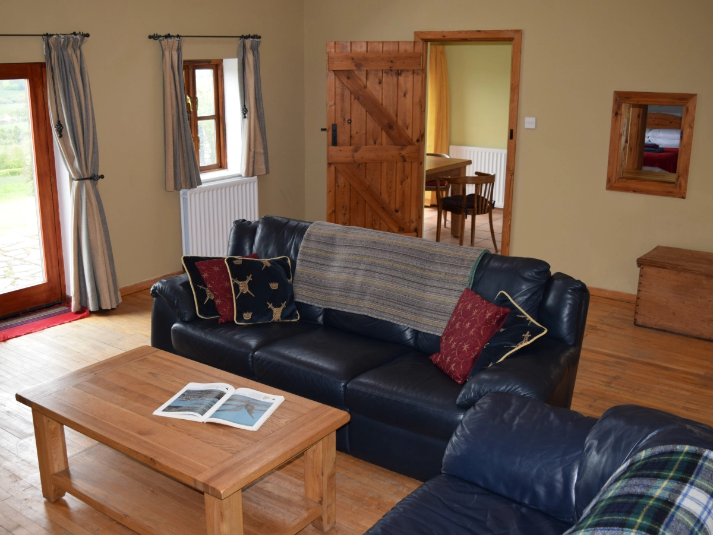
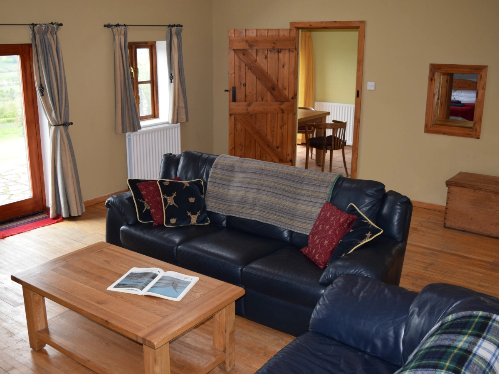
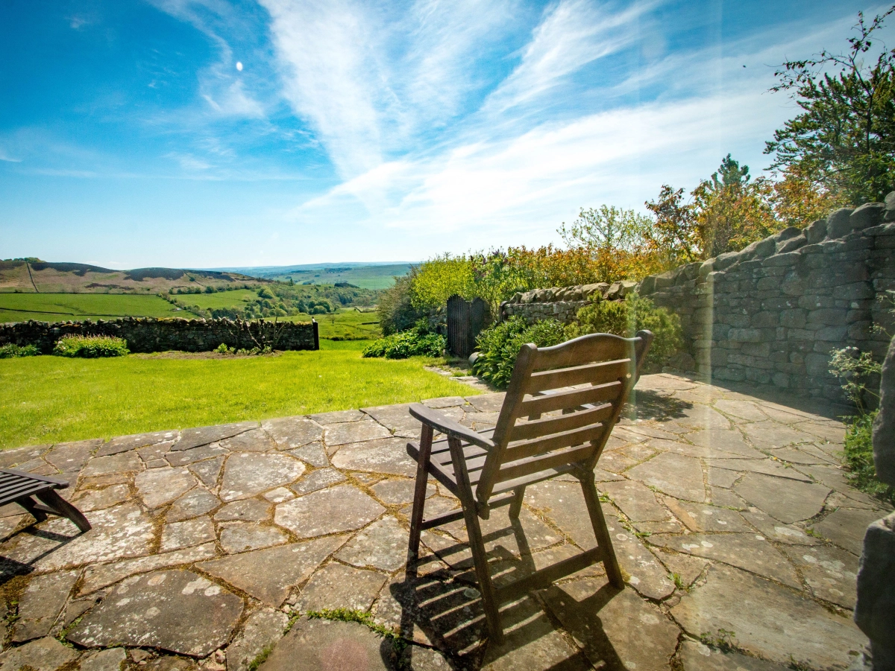
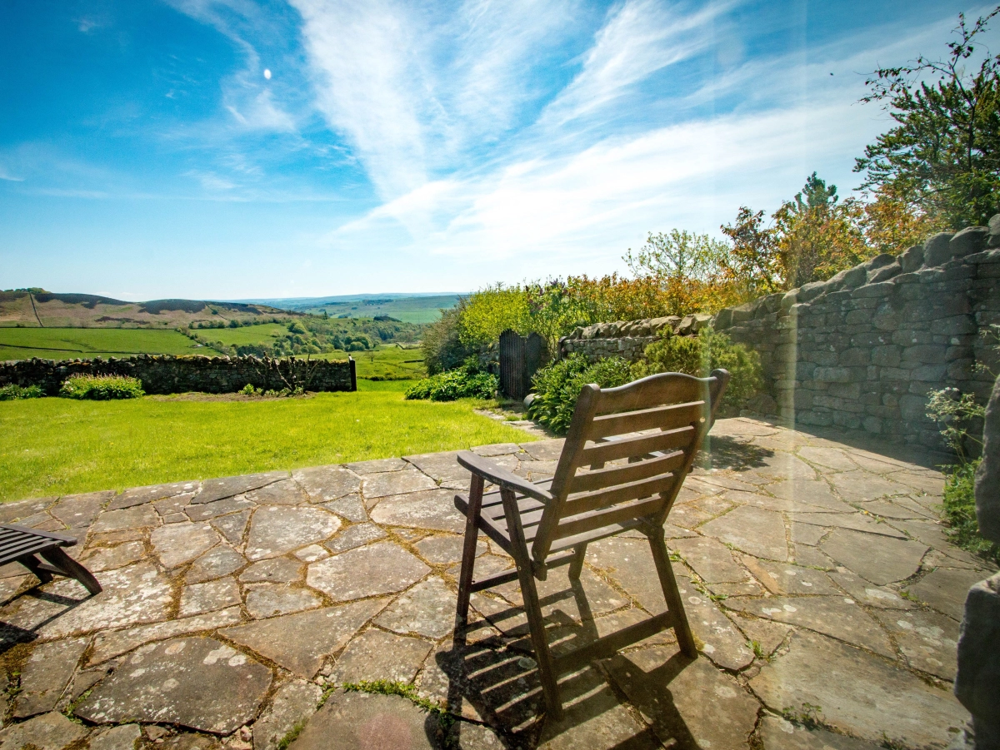

4★ Self-catering Accomodation in Northumberland National Park, walking distance between Hadrian's Wall and Vindolanda.
2
Entire House
1
1
Fireplace
Gallery
 


 


Location
Use this map to find our more about the neighbourhood.
A69 / B6318
AD122
685
Bardon Mill
Book Direct
Michael West
high.shield.cottage@gmail.com
(+44) 0771 425 7048